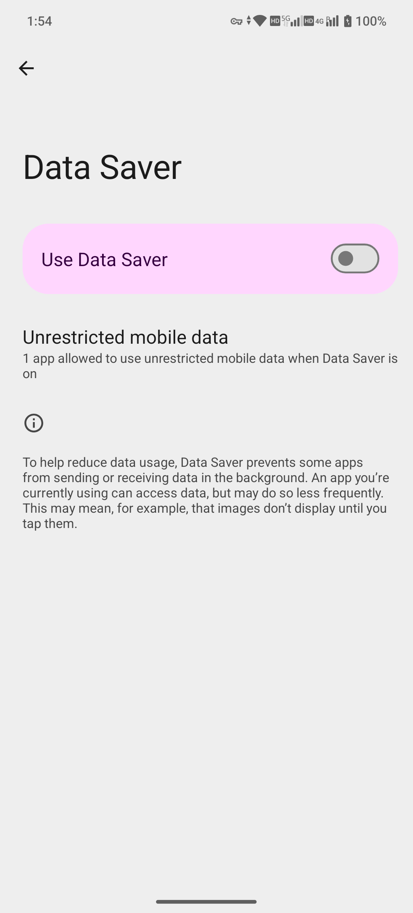

網路與連線 / network-options
飛航模式、流量節省、VPN 與 Private DNS
排查連線時把不同控制層分開，避免一次更改多項失去診斷依據。
入口已核驗 · 操作待核驗
適用基線：MA1 · Android 15 · MAG1WW53。採集：2026-10-14。本頁為編輯草稿；除明確說明的操作外，步驟未執行驗證。
Settings → Network & internet
前置條件
- 記錄原開關與 DNS/VPN 配置
- 本批不改變當前網路，以免中斷正在使用的服務
- VPN 憑據不採集
逐步操作
- 進入 Network & internet，依次檢視 Airplane mode、Data Saver、VPN、Private DNS。
- 飛航模式會影響無線連線；恢復時檢查 Wi-Fi、藍芽及行動網路是否按預期恢復，不假設所有開關同時開啟。
- Data Saver 主要影響後臺資料；對提醒問題同時核對應用後臺允許策略。
- VPN 只使用可信服務與機主提供的配置；不要為截圖建立未知連線。
- Private DNS 修改前記錄原選項，主機名必須來自可信 DNS 服務；輸入錯誤可能導致域名無法解析。
- 排錯時只臨時改變一項並記錄結果，確認後恢復。
按鈕與選項
| 按鈕 / 選項 | 用途與邊界 |
|---|---|
| Airplane mode | 飛航模式 |
| Data Saver | 流量節省 |
| VPN | 隧道連線配置；不保證可以訪問任意地區服務 |
| Private DNS | 加密 DNS 設定，不等於 VPN |
本批實際看到的英文標籤
- Internet
- SIMs
- Airplane mode
- Hotspot & tethering
- Data Saver
- VPN
- Private DNS
標籤出現只證明入口/選項可見；此列表不代表所有專案已操作。
正常結果與本次證據
四項入口已採集；開關變化、DNS 解析和 VPN 連線未實測。
取消、關閉與恢復
恢復原開關及可信配置；更改 DNS 後無法聯網時回到原選擇。
報錯與排查
- 域名無法訪問但 IP 可通：檢查 DNS
- 只有後臺 App 無資料：檢查 Data Saver 例外
- 所有應用掉線：核對飛航模式和 VPN 狀態
限制與版本
不展示賬戶、伺服器憑據或個人 VPN 配置。
同事複核：未進行。釋出狀態：未釋出。
截圖與影片
本批補錄以下英文真機畫面。除另有註明，素材證明選單及選項可見；未變更設定，也不代表外接裝置或服務已通過測試。

MAG1WW53 · 2026-10-14 · 原始截圖


MAG1WW53 · 2026-10-14 · 原始截圖